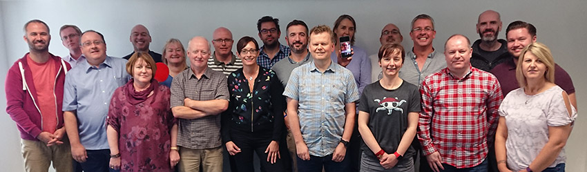

Open Source GIS
Making a career out of “free”
UCL, 2018
Follow along at archaeogeek.github.io/ucl_2018
The Questions
Who is this person standing up here?
Who does she work for?
What do they do?
What technologies do they use?
What skills are important?
What's not so important?
Who is this person?
Maths → Underwater Archaeology → Land Archaeology → Astun Technology = No qualifications in GIS!
I'm a consultant and metadata lead at Astun Technology. I studied Mathematics at the University of Durham, then Underwater Archaeology at the University of St Andrews, worked as a land archaeologist with Oxford Archaeology for 10 years, and then joined Astun Technology 6 years ago.
Astun are a small firm, with 20 staff. We're based in Epsom but have staff spread across the UK and abroad.
iShare Maps and GIS
Our primary product is a web-based GIS solution for local authorities, based on open source software. See My Chichester and My Wycombe for examples
Metadata Management
We also provide metadata solutions to allow local authorities meet their INSPIRE requirements, and complete metadata portals for larger clients.
We also do bespoke work, training, hackathons, and conferences
What packages do we use?
The main packages are PostgreSQL and PostGIS, OpenLayers, Mapserver, Geonetwork and OGRWe also use QGIS, Leaflet, Geoserver, Java and lots of Python
We contribute back by committing bug fixes, enhancements, and documentation to all the projects we use.
We also sponsor the development of new features, help organising conferences and so on
But how do we make money?
Our products are all based on open source, which is free, so where's the catch?
Fact: Open source is not about money
Open source is purely about not restricting access to the source code, preserving the author's integrity, and not discriminating against people, or specific use-cases. There's no limitation on charging for development of solutions based on that codeAdding Value
As long as you provide the source code of the core software under it's original license you can charge for development, installation, consultancy, training, maintenance...
Confession
We don't do everything with open source
We use Google for email, Amazon for our virtual servers, and even pay for software sometimes!
Our ethos is that open is best, but you have to be pragmatic...
Question: What is a typical day like working in Open Source?

Answer(s)

We spend a lot of time wrangling data from clients, generally scripting using python and SQL...
...but we also have to understand design, testing, and project management